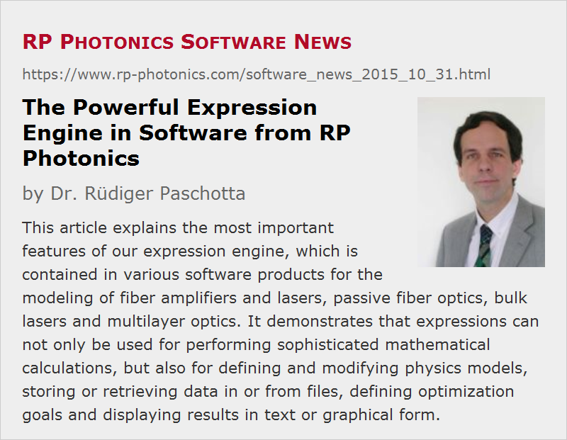

The Powerful Expression Engine in Software from RP Photonics
Posted on 2015-10-31 in the RP Photonics Software News (available as e-mail newsletter!)
Permanent link: https://www.rp-photonics.com/software_news_2015_10_31.html
Author: Dr. Rüdiger Paschotta, RP Photonics Consulting GmbH
Abstract: This article explains the most important features of our expression engine, which is contained in various software products for the modeling of fiber amplifiers and lasers, passive fiber optics, bulk lasers and multilayer optics. It demonstrates that expressions can not only be used for performing sophisticated mathematical calculations, but also for defining and modifying physics models, storing or retrieving data in or from files, defining optimization goals and displaying results in text or graphical form.

Most of our software products support a powerful script language. Part of that is the capability to work with mathematical expressions and string expressions. In this newsletter article, I will describe the essentials of our expression engine. This should be useful for those already using the software as well as for those who consider to purchase user licenses.
Simple Expressions
In the simplest case, a mathematical expression calculates a value, using some of the arithmetic features. Here are some examples, where either the evaluation result of an expression is assigned to a variable or a new function is defined:
A := sqrt(2) k := 2 * pi / 1380.73 phi := pi / 4 f(x) := A * sin(k * x - phi)
There is a wide range of standard functions which can be used in such expressions:
- There are all the trigonometric and various other functions such as sin(), arcsin() and sinh(), Hermite polynomials and different types of Bessel functions.
- The functions min() and max() find the position of the minimum and maximum, respectively, of a function within some interval.
- The function rnd() delivers random values, which can have a constant probability density in some interval, or a Gaussian probability function, and can even be correlated with previous random values (e.g. for modeling “pink noise”).
- With sum() and prod() you can calculate sums and products using some loop variables. Example:
s := sum(j := 1 to N, 1 / a[j]^2)
- With zero(), one can find a zero of an expression (root finding):
x := zero(cos(x), x in [0, 2], xtol = 1e-6)
- With numdif(), one can numerically calculate derivatives:
s := numdif(sin(x), x, 2{x position}, 1e-3{step size}, 2{order})
- With int(), one can numerically integrate a function:
I := int(cos(x)^2, x := 0 to 2pi, tol = 1e-6)
- The function odeprop() can be used to solve initial value problems with coupled differential equations.
- The function FFT() can perform a fast Fourier transform on an array. (Even Fourier transforms on higher-dimensional arrays are possible.)
Arrays
One can define areas of real, complex or string values. The array indices do not have to be integer values; an index can also range from 3.5 to 7.5 in steps of 0.25:
defarray a[3.5, 7.5, 0.25]
Arrays can be multi-dimensional, for example for storing optical intensity values on a three-dimensional grid:
defarray I_signal[x1, x2, dx; y1, y2, dy; z1, z2, dz]
There are various functions for performing operations on arrays, for example multiplying all array components with a certain value, multiplying two arrays component by component, getting the sum of the squares of all array components, or calculating the nth moment of an array.
Complex Arithmetics
Much of the arithmetics works not only with real values, but also with complex values. This holds not only for the standard operators, but also for functions like sqrt(), exp(), ln() and sin(). One can have complex variables, where the variable name ends on “%”:
z% := a% *exp(i * w * t) / (1 - z0%)
String Expressions
Strings are sequences of characters. String values can be stored in string variables, where the variable name ends on “$”. There are a lot of useful functions for processing strings. Some examples:
number$(j) := listitem(1 + j, "zero,one,two,three,four,five,six,seven,eight,nine,ten") s$ := datetostr(now(), "E", "yyyy-mm-dd") + ": " + number$(3) + ", " + number$(5)
There are also functions for performing complex search and replace operations, using so-called regular expressions; I have elaborated on these in the article of 2015-07-13.
Assignments in Expressions
The assignment of the value to a variable can not only be made in the form of a command, but also within an arithmetic expression. Example:
a := 2 * (b := 3.5)
Here, the expression in parenthesis will assign the value 3.5 to the variable b and return that value as its result; the variable a will then get the value 7.
Composite Expressions
Several expressions can be combined to a composite expression (or a block of expressions); they simply must be put between parentheses or between begin and end, and separated with semicolons. Example:
f(x, y) := (r := sqrt(x^2 + y^2); A / r + B / r^2)
The expressions will be evaluated subsequently, and the result of the last expression is taken as the result of the composite expression. In our example case, the first expression sets the variable r, and the second expression then uses that to obtain the final result.
Within composite expressions, one can use local variables, declared after “var”:
f(x, y) := (var r; r := sqrt(x^2 + y^2); A / r + B / r^2)
That way, a global variable named r will not be affected by the evaluation of the function; the local variable r is used only within that expression (on the so-called stack). One thus avoids possibly unwanted side effects.
Although only the value of the last expression in such a block is taken as the end result, the other expressions before that can have important effects:
- As in the example above, some variable values (or array values) can be set, which can be used in further expressions.
- One may call some functions which modify something in a physics model. For example, in the software RP Fiber Power there is a function for modifying the input power of an optical channel, and its call will affect the results of further function calls, for example for calculated output powers:
P_signal_out := (set_P_in(signal, 1 mW); P_out(signal))
- Other functions produce outputs in text or graphical form. For example, the function showoutput() displays a value in the so-called output area, the function point() can draw a marker (e.g. a rectangle) in a diagram for indicating a data point, and the function line() can draw a line in a diagram.
- There are also various functions for obtaining data from files or writing data to files. One can handle both text and binary files of any format.
- Even sound outputs can be produced – e.g. with play() a tone with given frequency and duration.
You can see that in many cases some kind of “side effect” and not the calculated result is the actual purpose of an expression.
Control Structures
It is quite common that certain control structures (e.g. if-then-else) can be used to control the flow of execution of commands. In our software, however, it is even possible to use control structures within expressions. A simple example case:
y := if x >= 0 then sqrt(x) else 0
When such an “if” expression is evaluated, the program first calculates an expression which is interpreted as a condition (here: x >= 0) and then evaluates the “then” expression, if the obtained value is non-zero, or otherwise the “else” expression.
Similarly, one can use while-do, repeat-until and for-do loops:
f(x) := (while x > 1 do x := x / 2; sqrt(x)) g(x) := (repeat x := x / 2 until x <= 1; sqrt(x)) h(x,n) := (for j := 1 to n do x := 2 * x; x)
Note that the script language is designed for good readability. I consider this as essential, not only for quickly learning the language, but also for avoiding mistakes. (There are certain quite cryptic languages, which may save you a few keystrokes but cost you hours to locate and fix certain bugs.)
Expressions Are Essential for Maximum Flexibility
For computer modeling, the power of our expression engine is not just nice to have, but essential for reaching your goals. It allows you to do most sophisticated things, for which I just give you a few examples:
In the software RP Fiber Power or RP ProPulse, you can define a function which propagates an ultrashort pulse through some sequence of optical elements, for example in order to simulate a complete round trip in the resonator of a mode-locked fiber laser:
DoResonatorRoundTrip() :=
begin
global allow all;
pp_loss(T_oc); { output coupler }
pp_multiply_f(t_filter[]); { bandpass filter }
pp_fiber(1, signal_passive1); { first passive fiber }
pp_fiber(2, signal_active); { active fiber }
pp_fiber(3, signal_passive2); { second passive fiber }
pp_sat_abs(l_abs, tau_abs, E_sat_abs); { slow saturable absorber }
pp_center(1); { center the pulse }
end
One could define a further function (not shown here) which does multiple resonator round trips until essential pulse parameters such as the energy, duration and bandwidth do not change significantly any more. In that way, you can find the steady state of a system.
Similarly, one can define the function which simulates the whole pulse amplification process in a regenerate if amplifier model: pumping of the gain medium, injection of a short seed pulse, some number of round trips for amplifying the pulse, and finally ejection of the pulse.
In the software RP Resonator, one can define a figure-of-merit function for defining the goals of a numerical optimization. That function can depend on calculated values of mode radii for different values of the dioptric power of the thermal lens in the laser crystal:
FOM() :=
{ figure of merit for given arm lengths }
begin
global allow all;
const dF = 0.5;
var F_cr0;
F_cr0 := F_cr;
sqrt(sum(F := 0 to F_cr_max step dF,
((Init(F_cr := F); w(zm[Crystal], lambda_ref)) / w_cr_w - 1)^2)
+((Init(F_cr := F_cr0); w(zm[M4], lambda_ref)) / w4_w - 1)^2
+(L_res / L_res_w - 1)^2
);
end
In the multilayer optics software RP Coating, one can define similar figure-of-merit functions, in that case depending on properties of a multilayer coating. One could also define a function which sets all layer thickness values of a chirped mirror based on a few parameters, determining e.g. some range of Bragg wavelengths. Also, one can define a function which saves an obtained reflectivity profile in a file:
SaveReflectivity(Filename$, l1, l2, dl) :=
begin
var f;
f := open_file(Filename$, "wt");
for l := l1 to l2 step dl do
write(f, str(l) + "," + str(100 * R(l):f1) + char(13) + char(10));
close_file(f);
end
In various programs, you could also do certain calculations on a model many times, each time with slightly different input values (e.g. with random noise), and get the results statistically evaluated. Similarly, I have made simulations where an ultrashort pulse circulates in a mode-locked laser under the influence of quantum noise, and the script then displays noise spectra for pulse energy (intensity noise), pulse timing (timing jitter) and other quantities.
You see that expressions are by far not only used for calculating certain things, but also for defining and modifying physics models, storing or retrieving data in or from files, defining optimization goals, displaying results in text or graphical form, etc.
Quite obviously, such enormous flexibility could never be obtained with a purely graphical user interface. There, one might for example provide some options for saving reflectivity profiles (see the last example), but one could hardly allow the user to save the data in virtually any format which can imagined. Also, the user could probably not trigger such an operation at any time within a sophisticated procedure. The full flexibility is possible only if one allows the user to do full-blown programming – both on the level of script commands and within expressions.
Some Historical Remarks
Of course, the design and implementation of such a script language or even just a powerful expression engine is a huge undertaking. In my case, it has a long history. I started such things around 1990 just for curiosity: I wanted to understand how a computer can interpret, evaluate and manipulate mathematical expressions. Soon, I discovered the enormous usefulness of such things, and as the first application I made a program for processing data and plotting diagrams. A much improved version of that program – called JPLOT – has become the ancestor of most of my professional simulation software:
- RP Fiber Power for fiber optics
- RP Resonator for laser resonator design
- RP ProPulse for ultrashort pulse propagation (mostly in bulk devices)
- RP Coating for multilayer optics
These products inherit all the capabilities of JPLOT, and specific capabilities for certain physics modeling tasks are added. For example, in RP Fiber Power the expression engine is extended by hundreds of physics functions which e.g. modify model details or retrieve calculated quantities. In addition, helpful features are added to the user interface – for example, interactive forms for exploring the evolution of ultrashort pulses or the results of numerical beam propagation.
With that concept, multiple software products can profit from the powerful script language and expression engine, and only the specific extensions had to be worked out beyond the general basic capabilities, which already go quite far. As a result, RP Photonics has a substantial competitive advantage in the software area, since most of our competitors cannot offer such scripting features, or at least not on a comparably advanced level, and obviously it would require a huge investment to design and implement that.
This article is a posting of the RP Photonics Software News, authored by Dr. Rüdiger Paschotta. You may link to this page, because its location is permanent.
Note that you can also receive the articles in the form of a newsletter or with an RSS feed.
|  |
If you like this article, share it with your friends and colleagues, e.g. via social media:
These sharing buttons are implemented in a privacy-friendly way!